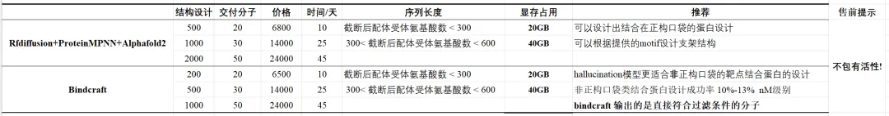
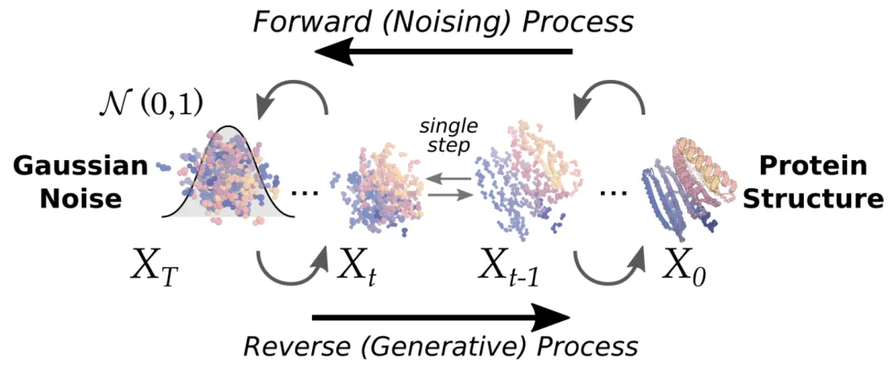
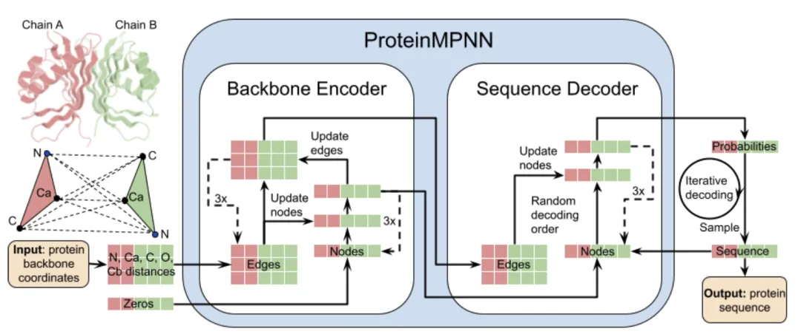
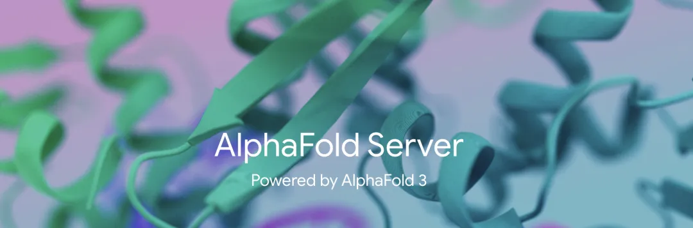
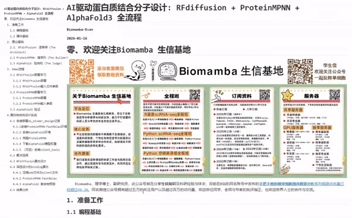
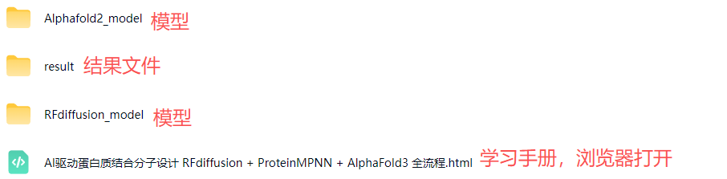

正刊都在用的AI驱动蛋白质从头设计流程：RFdiffusion+ProteinMPNN+AlphaFold3
原文：https://mp.weixin.qq.com/s?__biz=MzAwMzIzOTk5OQ==&mid=2247538886&idx=2&sn=e70f96e3ac4ca3fedac3152f8149dece&chksm=9b3c2196ac4ba880f79d11dd2a51ebf0483aaa35f35e6e35e399b2fec5cda37ad5e030ac72e2#rd 合集：AIDD & CADD

写在前面


传统蛋白质工具与药物 主要来源于天然筛选、定向进化及基因工程改造，依赖高通量实验与结构解析等手段进行优化，这导致传统方法周期漫长 与价格昂贵。然而，Ai驱动的蛋白质设计领域目前正在从根本上颠覆 这一传统方法。与其对现有蛋白质进行改造，不如从底层构建具有复杂构架与功能的蛋白质 ，这些蛋白质不仅与天然蛋白一样强大，而且是全新的、可由用户编程的，这在如今正成为可能。这就是从头设计 (de novo design) 的概念：基于工程学原理或“蓝图”设计蛋白质，而不依赖于自然界中已存在的天然起点 。
近年来，蛋白质设计领域迎来了快速发展。其中，华盛顿大学的David Baker 实验室做出了奠基性的贡献（David Baker 本人是2024年诺贝尔化学奖的获得者：诺贝尔化学奖也太交叉了）。该团队在底层算法创新的基础上，将深度学习生成模型与生物物理法则进行了有效结合，建立了一套目前被学界普遍认可的标准化设计流程。这一计算框架显著克服了以往蛋白质从头设计高度依赖算力穷举和人工经验的局限性，使得蛋白质的理性设计（rational design）在实验成功率与可重复性上得到了大幅提升，使得上述从头设计蛋白的愿景从理想拉入现实。
支撑这一标准化计算流程的核心，正是本文介绍并演示了三个关键工具：RFdiffusion、ProteinMPNN和AlphaFold。我们将演示这三个工具的基本用法，以及它们解决Ai蛋白质设计中三个核心步骤的串联：造骨架 、填序列、验结构。简单来说你可以用这个系列软件从0设计一个符合你需求的结合蛋白 ，已经有很多文献使用这套流程设计了具有不同功能的蛋白发表了顶刊。
David Baker 组：
nature：https://www.nature.com/articles/s41586-023-06953-1
Science：https://www.science.org/doi/10.1126/science.adv0185
非David Baker 组：
nature chemistry：https://www.nature.com/articles/s41557-025-01998-3
ACS Nano：https://pubs.acs.org/doi/10.1021/acsnano.5c13783
PS，如果你需要我们提供代运行，尽管联系我们，以下是参考列表：

如果你缺少GPU算力，不妨看看：免费使用|共享服务器上线RTX3080(20GB显存)RTX5090、4080S、5070显卡上机 优惠订阅资料或购买服务器请联系客服微信[Biomamba_zhushou]更多生信教程可见：为什么我们敢开放终身订阅 -Biomamba
RFdiffusion+ProteinMPNN+AlphaFold
RFdiffusion：造骨架（The Architect）
- 核心逻辑 ：它暂时不关注具体的氨基酸侧链序列，而是聚焦于“拓扑形状”与“空间互补”。算法从随机高斯噪声 出发，在逐步去噪的过程中，不仅遵循一般蛋白质的折叠物理化学规则，还能动态感知靶标蛋白带来的空间位阻（Steric hindrance）和界面几何特征，最终生成一个完美贴合靶向区域的蛋白质骨架。

ProteinMPNN：填序列（The Builder）
- 核心逻辑 ：它通过深度学习理解空间中残基的相互作用。它接过 RFdiffusion 给出的“骨架” ，迅速计算出最佳的氨基酸序列组合。

AlphaFold：验结构（The Judge）
- 核心逻辑 ：我们将 ProteinMPNN 设计生成的氨基酸序 列输入至 AlphaFold 进行计算验证，以检验该序列在自然生理条件下能否自发折叠为预设的三维靶向构象。同时，通过分析 AlphaFold3 输出的结构置信度指标（如 pLDDT、PAE 及 ipTM 等） ，我们能够定量评估该蛋白质设计方案的合理性与结合稳定性 。


所见即所得

以html格式提供学习手册，可在浏览器中打开并翻阅学习：

教程目录：零、欢迎关注一、准备工作1.1 编程基础1.2 硬件基础二、理论基础2.1 RFdiffusion：造骨架（The Architect）2.2 ProteinMPNN：填序列（The Builder）2.3 AlphaFold：验结构（The Judge）三、Demo流程3.1 RFdiffusion部署学习 3.1.1 RFdiffusion部署 3.1.2 RFdiffusion输入文件参数3.2 ProteinMPNN部署学习 3.2.1 ProteinMPNN部署 3.2.2 ProteinMPNN输入参数3.3 AlphaFold3 验证四、蛋白结合剂设计实战4.1 安装部署dl_binder_design记录 4.1.1 安装ProteinMPNN-FastRelax环境 4.1.2 安装AlphaFold2环境 4.1.3 克隆ProteinMPNN 4.1.4 下载AlphaFold2模型权重 4.1.5 （可选）安装silent_tools4.2 靶点选择4.3 RFdiffusion蛋白设计4.4 筛选设计的binding蛋白 4.4.1 压缩pdb文件为silent文件 4.4.2 ProteinMPNN-FastRelax 4.4.3 AlphaFold2 复合物预测4.5 结果分析
** **
文末下载链接中包含以下内容：

往期推送
Biomamba 生信基地现已开放终身订阅，现已包含几十篇订阅资料，未来37年持续更新：为什么我们敢开放终身订阅
2025年我们零差评完成订阅任务（2026订阅须知），2026已更新订阅内容：
风靡一时的scTenifoldKnk单细胞虚拟基因敲除,准不准?
scRNA拟时序分析三大Python包： palantir、PAGA、RNAvelocity
正刊都在用的AI驱动蛋白质从头设计流程：RFdiffusion+ProteinMPNN+AlphaFold3
转录因子、基因共表达网络分析手册：pySCENIC在脑、黑色素瘤中的应用
 **
**
**
**
持续更新中~
解锁前需阅读：2026订阅须知
学习手册领取：

本推送教程、测试文件下载链接：
https://pan.baidu.com/s/1t8YLKYjf2o2izACd7mARIA
提取码请联系客服微信获取：